Geomorphometry I:
Elevation surface modeling
Helena Mitasova
GIS/MEA582 Geospatial Modeling and Analysis NCSU
Outline
- 3D mapping technologies
- digital elevation models
- triangular irregular networks
- regular grid (raster)
- isolines and meshes
- point clouds, multiple return data
- point cloud analysis and binning
3D mapping technologies
- Continuous surface measured at discrete points
- Human selected points
- Automated point sampling
- Terrestrial (land) surface
- Stereophotogrammetry: aerial and satellite imagery
- Lidar: aerial and terrestrial
- Interferometric radar: aerial, satellite, space shuttle
- RTK GPS
- Bathymetry mapping
- single and multiple beam sonar
Ground-based 3D mapping
Terrestrial lidar and acquired point cloud
 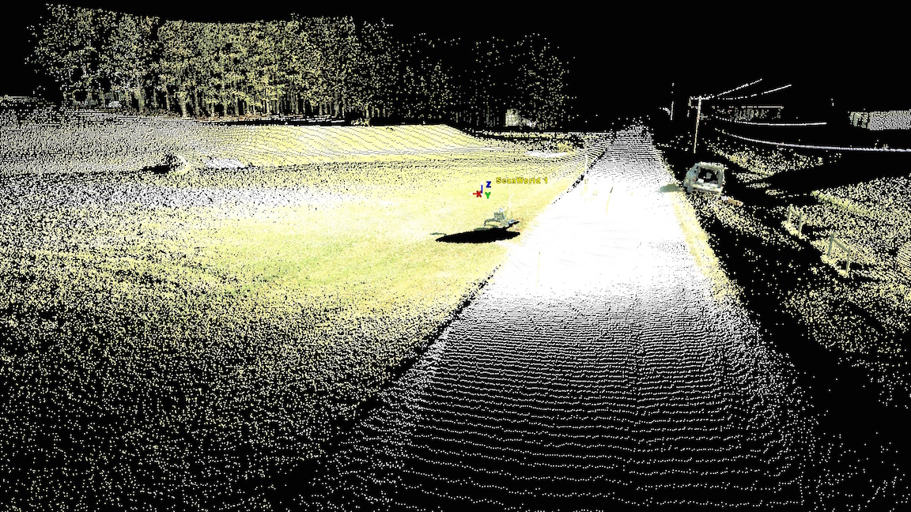
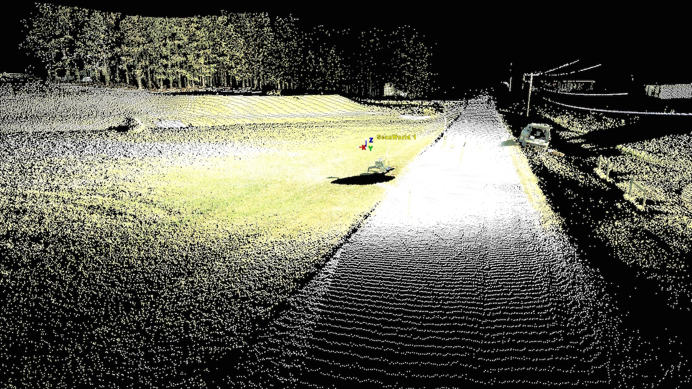
Ground-based mobile 3D mapping
Mobile RTK GPS: mapping Jockey's Ridge dune

Aerial and satellite 3D mapping
Shuttle, satellite, airplane, UAS platforms with
radar, lidar, and/or camera sensors
 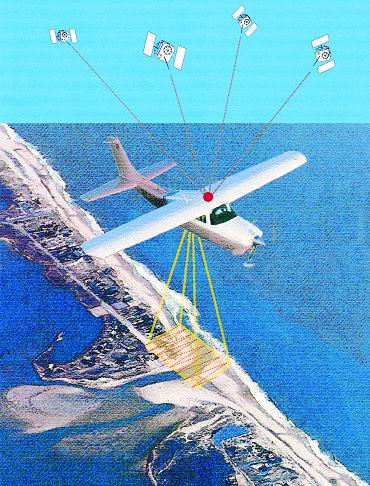
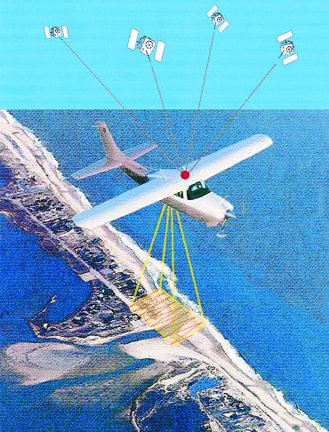

Bathymetry 3D mapping
Single and multibeam sonar, topobathy lidar
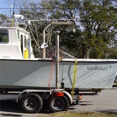
Images from Geodynamics, see the website to learn
more about coastal surveying technologies
Topobathy lidar, National Geodetic Survey
Digital elevation models
- Digital Terrain Model (DTM):
- bare ground elevation surface
- interface between solid Earth and atmosphere/anthroposphere/biosphere
- Digital Surface Model (DSM):
- elevation surface including above ground features
- interface between Earth surface with water, vegetation, structures and atmosphere
- Digital Bathymetry Model (DBM)
- elevation surface at the bottom of water bodies
- interface between solid Earth surface and hydrosphere (bottom surface of lakes, rivers and ocean)
- Seamless topobathy: continuous solid earth surface, TBDEM
- Digital Crop or Canopy Surface Model (DCM),
Digital Urban Model (DUM), ....
DTM and DSM
Small rural watershed - NCSU experimental fields
1 m res DTM and DSM interpolated from lidar point cloud

DBM sonar and lidar
Multibeam sonar data for area near Cape Fear, NC, bathymetric lidar for a nearshore area in Florida
raw data and interpolated 1m res DBM
 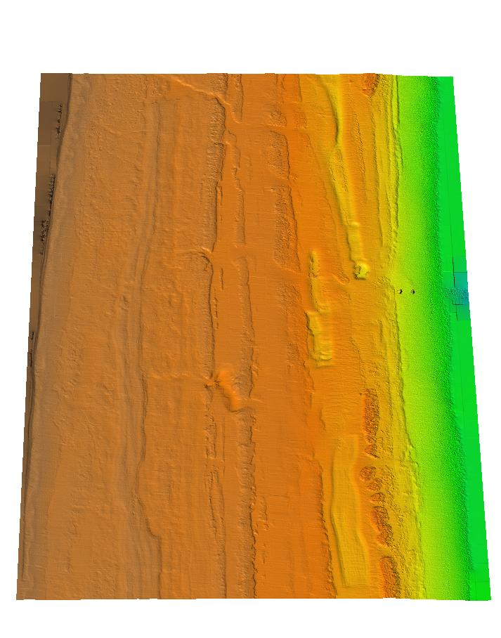
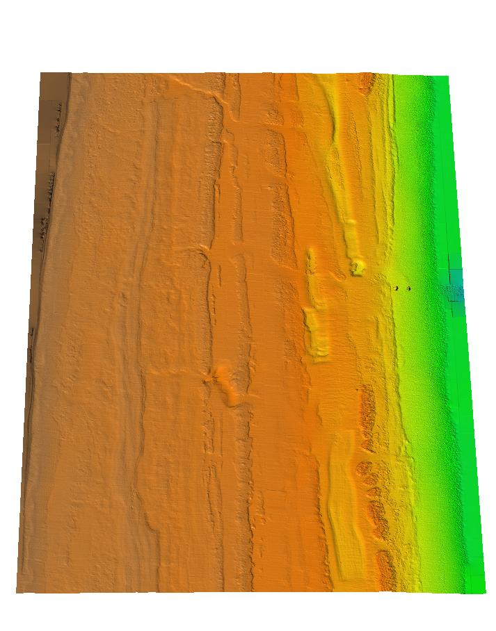
DCM from lidar and UAS
Digital Canopy Model with canopy height at Mamoth Cave National Park (0.6m res) and Digital Crop Surface model from UAS point cloud (0.05m res)
DUM from lidar
Digital Urban Model: raster and vector representation
Centennial Campus and Downtown Raleigh
From 3D mapping to DEM
Result of 3D mapping
- human selected points (photogrammetry and GPS)
- points along lines (digitized contours or profiles)
- point clouds (lidar, Structure from Motion)
Examples

Point cloud patterns

Digital Elevation Models
- Regular grid (raster)
- Unstructured meshes: Triangular Irregular Network (TIN)
- Contours - elevation isolines derived from grid or TIN
- Parametric Mesh: complex structures
- Unstructured point clouds: measured data
Regular grid: raster DEM
Derived from measured points by gridding:
- if there is at least one point for each grid cell – binning, per-cell statistics
- if some grid cells do not include points – spatial interpolation or approximation
Scattered points to raster
From given scattered points to points at regular grid
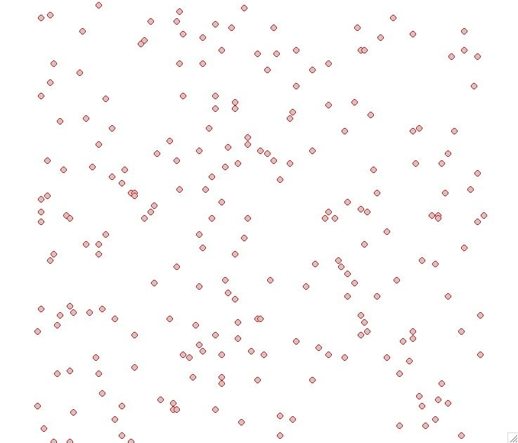

Raster representation generally does not preserve the original data points
Scattered points to raster
From given scattered points to points at regular grid

Raster DEM properties
- simple data structure and algorithms
- easy to combine with imagery
- uniform resolution - potential for undersampling and oversampling
- representation of faults and sharp breaklines requires very high resolution
- most public elevation data are distributed as raster DEM through On-line repositories
Unstructured mesh: TIN
- Triangular Irregular Network: constructed from the measured points by triangulation (before computer age this technique was used for manual interpolation of contours from surveyed points)
- Delaunay Triangulation: maximizes the smallest angle of the triangles to avoid skinny triangles
- Constrained Delaunay Triangulation – includes predefined edges that cannot be flipped
- TIN is a vector data model representation, that usually preserves the original data points
Scattered points to TIN
From given scattered points to Delaunay TIN

Scattered points to TIN
No interpolation to raster DEM:
3D TIN is the vector-based elevation model

TIN properties
- requires pre-defined breaklines for man-made features, valleys, faults, etc.
- density of TIN is adjusted to surface complexity
- additional points may need to be interpolated to create smooth surface
When to use TIN:
- engineering applications,
- manual modification of model is desired(design),
- complex faults need to be represented,
- multiscale representation for visualization
TIN issues
- discontinuity in first derivative along edges: artificial triangular structures on the surface
- dams can be created across valleys if stream is not defined as a breakline
TIN issues
If input are points on contours: flats on the top of hills or ridges if no peaks are defined

Elevation isolines: contours
- traditional approach for representation of elevation, drawn by hand from measured mass points by interpolating along triangle edges
- automated procedures: from TIN or grid,
- not very suitable for highly detailed, noisy data such as lidar
- very useful when the surface has simple geometry
- selecting contour interval: depends on slope and resolution
Contours from lidar
Contours from binned DEM and from a DEM inetrpolated with smoothing splines
 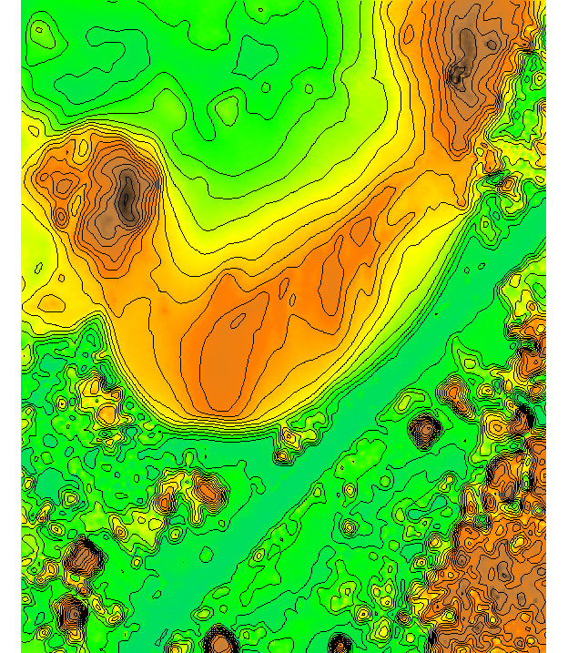
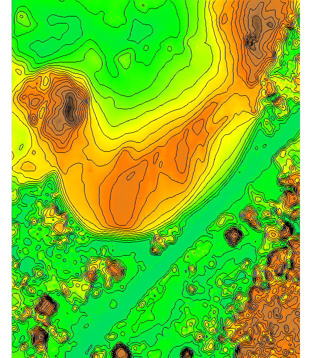
3D parametric meshes
When features cannot be represented by bivariate function, parameteric meshes are used

Point clouds
- Set of $(x, y, z, r, i, ...)$ measured points reflected from Earth surface or objects on or above it,
- $x,y,z$ are georeferenced coordinates
- $r$ is the return number and
- $i$ is intensity,
- r:g:b may be also measured
- Formats
- binary LAS and LAZ format: industry lidar data exchange format
- header, record info, $x,y,z,i$, scan direction, edge of flight line, time, classification, etc.
- ASCII $(x,y,z, ...)$ text format
Multiple return point clouds

Multiple return point clouds
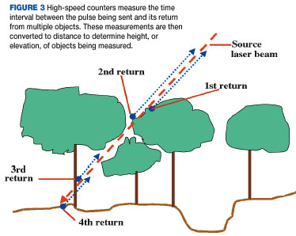
Bare ground points (yellow x) are sparser in vegetated areas
Point cloud processing
- filtering outliers (birds etc.)
- resolving swath overlaps
- classification
- bare earth point extraction
- canopy extraction
- structures and power lines extraction
- computing DEMs
Point cloud analysis: binning
Binning: fast method for analyzing point clouds and generating DEMs using per-cell processing
- analysis: number of points per cell, range, stddv
- Methods for DEM: mean, min, max, nearest
- sufficient for many applications
- no need to import the points, on-fly raster generation
- may be noisy, include no-data spots
Point elevation binning
Jockey's Ridge 1999: unfiltered single return lidar: 1m grid cell binning using nearest neighbor elevation
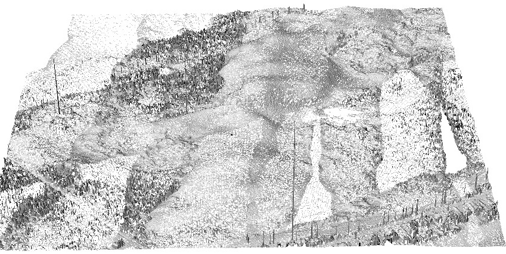
Result has many NULL cells – what to do?
Point elevation mean
Jockey's Ridge 1999,
3m grid cell binning using mean elevation
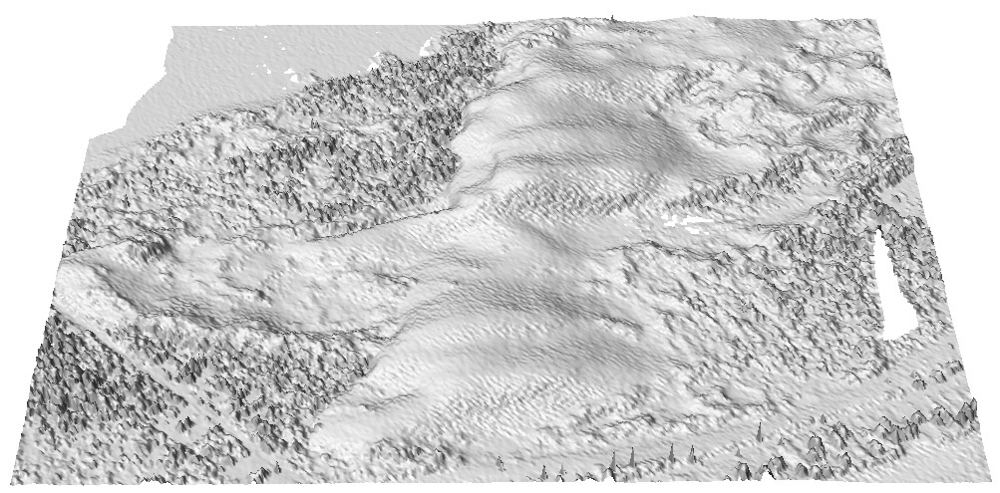
Result is somewhat fuzzy – what to do?
Interpolated DEM
Jockey's Ridge 1999,
1m DEM interpolated by RST spline method
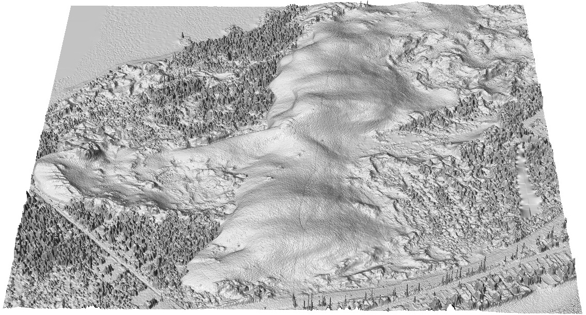
Note visible edges from overlapping swaths
Point density: 2013 Wake county lidar
Number of points per 1m grid cell:
all returns and first return, high density in overlap


Point density: 2013 Wake county lidar
Number of points per 1m grid cell: all returns and bare ground returns
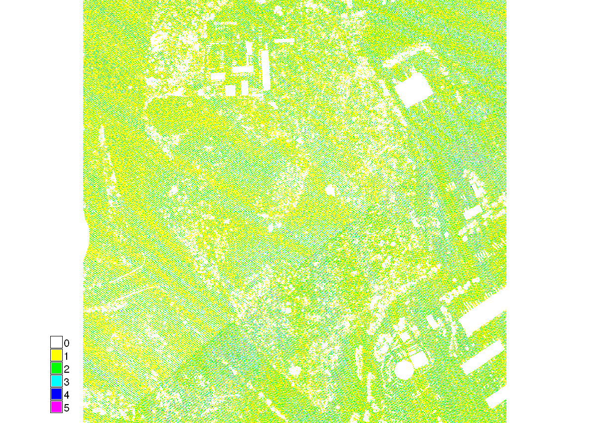
Compute DSM and DTM using nn, mean or max cell elevation in the assignment.
DSM with orthophoto
DSM (1m res) computed from all returns using nn elevation binning, with draped orthophoto
Interpolated DTM
DTM (1m res) interpolated with RST method using filtered bare ground points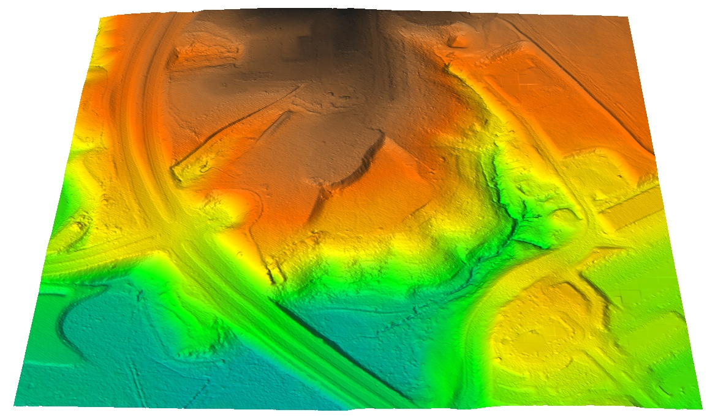
Interpolated DSM
DSM (1m res) interpolated with RST method using first return points
Think about how to compute canopy and building height from DSM and DTM
Lidar and UAS DSm fusion
Lidar-based DSM can be efficiently updated with DSM generated from UAS imagery using structure from motion
Voxel model: Vegetation structure
Multiple return lidar point cloud: voxel model used to derive 3D vegetation fragmentation index
Summary
- rapid evolution of 3D mapping technologies
- digital elevation models: DTM, DSM, DCM, BDEM
- regular grid (raster)
- triangular irregular networks
- isolines and meshes
- point cloud analysis and binning
- lidar and UAS